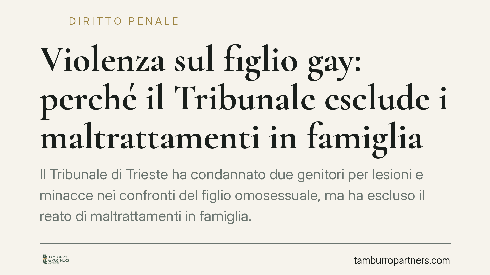

Violenza sul figlio gay: perché il Tribunale esclude i maltrattamenti in famiglia
Il Tribunale di Trieste ha condannato due genitori per lesioni e minacce nei confronti del figlio omosessuale, ma ha escluso il reato di maltrattamenti in famiglia. La ragione: mancava la sistematicità delle condotte. La pronuncia offre l'occasione per chiarire il confine tra reato abituale ed episodi violenti isolati, un tema che incide direttamente sulla qualificazione dei fatti.

Il caso
Secondo quanto riportato dalle cronache, il Tribunale di Trieste ha affrontato la posizione di due genitori accusati di condotte violente verso il figlio a causa del suo orientamento sessuale. Nel procedimento sono comparsi anche la nonna e un'amica del giovane in qualità di persone informate sui fatti.
L'esito: condanna per lesioni personali (art. 582 c.p.) e minacce (art. 612 c.p.), ma esclusione del più grave reato di maltrattamenti in famiglia (art. 572 c.p.).
Una precisazione di metodo: queste righe muovono dalla notizia di stampa e non dalla lettura diretta della motivazione, che al momento non risulta pubblicata integralmente. Le considerazioni che seguono valgono quindi come inquadramento generale, non come commento a un testo consultato.
Inquadramento normativo
L'art. 572 c.p. punisce chi maltratta una persona della famiglia o comunque convivente. È un reato abituale: non basta il singolo episodio, per quanto grave. Occorre una pluralità di condotte, reiterate nel tempo, che nel loro insieme creino un regime di vita vessatorio e mortificante per la vittima. La cornice di pena, dopo gli interventi di riforma, è di reclusione da tre a sette anni (si raccomanda comunque la verifica sul testo aggiornato del codice, soggetto a modifiche).
Diverso è il caso di reati episodici come le lesioni (art. 582 c.p.) o le minacce (art. 612 c.p.): qui rileva il singolo fatto, autonomamente punibile. Quando gli episodi restano isolati e non compongono un quadro di sopraffazione continuativa, viene meno il presupposto dell'abitualità e, con esso, l'applicabilità dell'art. 572 c.p.
Proprio su questo passaggio ruota la decisione: le condotte accertate, secondo la ricostruzione, non presentavano quella continuità sistematica che qualifica il maltrattamento. Da qui la riconduzione ai reati episodici.
Un chiarimento sull'aggravante
Parte del dibattito giornalistico ha richiamato l'aggravante di odio e discriminazione. Va precisato con cautela: l'art. 604-ter c.p. prevede un aggravamento di pena per i reati commessi con finalità di discriminazione o odio etnico, nazionale, razziale o religioso. L'estensione di tale aggravante all'orientamento sessuale è stata oggetto di proposte normative (il cd. DDL Zan) che non sono state approvate. Ad oggi, dunque, l'applicabilità dell'aggravante alle condotte omotransfobiche non è un dato pacificamente vigente. Su questo profilo è indispensabile la verifica del testo normativo aggiornato al momento del fatto.
Implicazioni pratiche
Per chi si trova coinvolto in vicende analoghe, come persona offesa o come indagato, la lezione è precisa: la qualificazione dei fatti non è un dettaglio formale. Cambiare cornice normativa significa cambiare pena, prescrizione, misure applicabili e strategia processuale.
Per la persona offesa, ottenere il riconoscimento dell'art. 572 c.p. richiede di dimostrare non singoli episodi, ma un percorso di condotte collegate nel tempo. Serve una ricostruzione documentale ordinata.
Per l'indagato, viceversa, la difesa può legittimamente contestare l'abitualità quando gli episodi risultano scollegati o occasionali.
La corretta impostazione tecnica dei fatti incide sull'esito e va valutata caso per caso.
Cosa fare in concreto
- Ricostruite la cronologia: annotate date, luoghi e dinamiche di ciascun episodio. La sistematicità si prova dimostrando la sequenza, non il singolo fatto.
- Individuate i testimoni: familiari, amici, vicini o sanitari che abbiano assistito o raccolto confidenze. Nel caso in esame hanno rilevato le dichiarazioni di nonna e amica.
- Conservate la documentazione: referti medici, certificati di pronto soccorso, messaggi, registrazioni lecite, denunce pregresse.
- Verificate la qualificazione contestata: controllate se i fatti siano stati inquadrati come reato abituale o come episodi autonomi, perché ne discendono conseguenze diverse.
- Non attendete l'aggravarsi delle condotte prima di rivolgervi a un professionista o alle autorità competenti.
---
Contributo informativo a cura di Tamburro & Partners Avvocati - Avv. Giuseppe Tamburro. Non costituisce parere legale.
Ogni condominio ha una storia a sé.
Se gestisci un'amministrazione e vuoi un confronto su una specifica questione condominiale, scrivi allo studio. Ti rispondiamo entro un giorno lavorativo.